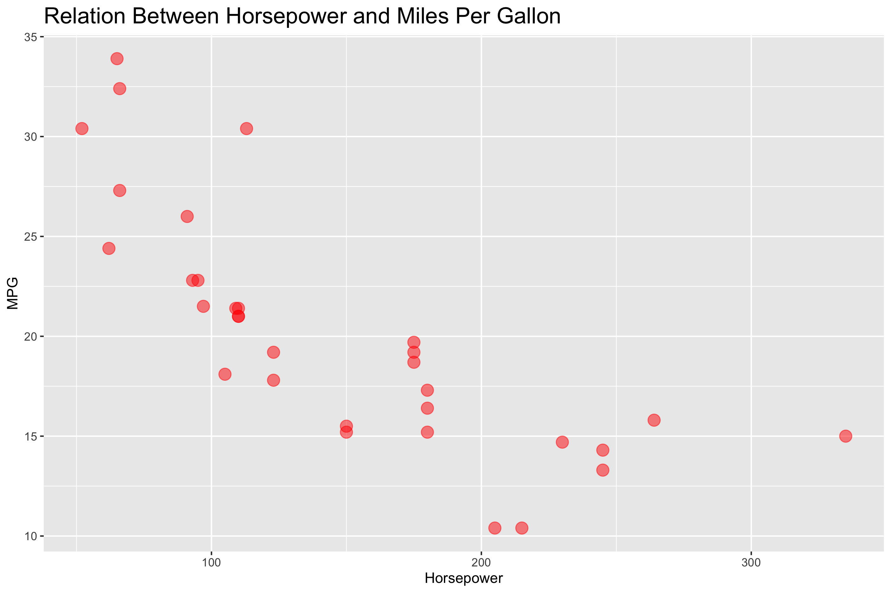

2 How to Think About Data
When a data analyst thinks about data they will likely view that data in a table format with some visualization of that data

A data analyst likely thinks of mathematical and statistical abstractions. This may involve putting things in terms of relationships or associations, perhaps theoretical mathematical models that take various forms; linear, quadratic, non-parametric.
In general, we should have the following in our minds when thinking of variables in our data
- quantitative (numerical) vs. qualitative (categorical)
- continuous vs. discrete
- scales: nominal, ordinal, interval, ratio
- dependent vs. independent
- descriptors (predictors) vs. response
- input vs. output
- correlations
- theoretical models (linear, quadratic, etc.)
Let’s define some of these terms
- Quantitative:
- Relating to, measuring, or measured by the quantity of something rather than its quality. This data is expressed in numbers and can be measured. Quantitative data is also referred to as numerical data.
Quantitative data is grouped into two main types; continuous and discrete.
- Example
- The folllowing are all examples of quantitative data
- weight in pounds
- length in centimeters
- dollar value of a company’s stocks
- Qualitative:
- Relating to, measuring, or measured by the quality of something rather than its quantity. This data is usually expressed as labels, groups, or categories. Qualitative data is also referred to as categorical data.
Qualitative data is grouped into two main types; nominal or ordinal.
- Continuous:
- Suppose \(f\) is a function that’s defined on a set \(X\) of real numbers and \(x_o \in X\). Then \(f\) is continuous at \(x_o\) if
\[ \lim_{x \to x_0} f(x) = f(x_0). \]
Then we say that \(f\) is continuous on the set \(X\) if it is continuous at each number in \(X\).
What this definition is saying is that a function has no discontinuous points such as a jump or a break along a given interval.
- Jump discontinuity
\[ \lim_{x \to x_0} f(x) \; \text{does not exist} \]
- Removable discontinuity
\[ \lim_{x \to x_0} f(x) \neq f(x_o) \]
- Infinite discontinuity
\[ \lim_{x \to x_0} f(x) = \infty \]
- Discrete:
- A numerical type of data that refers to distinct elements. In other words, objects or elements that are unconnected. Discrete elements are almost always finite.
There are 4 main types of scales of measurement with how variables are defined and quantified; nominal, ordinal, interval, ratio
- Nominal:
- A categorical type of data that represents a group or category that does not have any order or ranking.
- Example:
- The following are examples of nominal data
- Hair color (black, brown, blonde, etc.)
- Vehicle types (SUV, coupe, sedan, crossovers, etc.)
- Ordinal:
- A categorical type of data that represents a group or category that does have an order or ranking.
- Example:
- The following are some examples of ordinal data
- Education level (high school, bacehelor’s, master’s, etc.)
- Socioeconomic status (low, middle, upper)
- Interval:
- Interval data is a type of quantitative data that represents measurements with a consistent scale but without an absolute zero point. The differences between the values are meaningful, but the data lacks a meaningful absulote zero. That is, it doesn’t make sense to say that something is “twice as much” as something else.
- Example:
- The following are some examples interval data
Temperature: the difference between \(10\textcelsius\) and \(25\textcelsius\) is the same as \(-5\textcelsius\) and \(10\textcelsius\). Notice that there’s a lack of a true zero point because \(0\textcelsius\) doesn’t reperesent a lack of temperature.
Time of day: there’s also an equal interval between the times and on the 24 hour clock 00:00 does not represent a lack of time
- Ratio:
- Ratio data is a type of quantitative data that represents measurements with a consistent scale and it also contains an absolute zero point. This absolute zero point allows for meaningful calculations of proportions and ratios between measurements.
Ratio data allows for the most comprehensive statistical analysis when compared to the other types of data due to the ability to perform mathematical operations such as multiplication and division.
| Property: | Nominal | Ordinal | Interval | Ratio |
|---|---|---|---|---|
| Named | \(\checkmark\) | \(\checkmark\) | \(\checkmark\) | \(\checkmark\) |
| Equals (=) | \(\checkmark\) | \(\checkmark\) | \(\checkmark\) | \(\checkmark\) |
| Frequency | \(\checkmark\) | \(\checkmark\) | \(\checkmark\) | \(\checkmark\) |
| Mode | \(\checkmark\) | \(\checkmark\) | \(\checkmark\) | \(\checkmark\) |
| Order | \(\checkmark\) | \(\checkmark\) | \(\checkmark\) | |
| Greater/less than | \(\checkmark\) | \(\checkmark\) | \(\checkmark\) | |
| Median | \(\checkmark\) | \(\checkmark\) | \(\checkmark\) | |
| Equal interval | \(\checkmark\) | \(\checkmark\) | ||
| Add, Subtract | \(\checkmark\) | \(\checkmark\) | ||
| Arithmetic mean | \(\checkmark\) | \(\checkmark\) | ||
| Deviation | \(\checkmark\) | \(\checkmark\) | ||
| Absolute zero | \(\checkmark\) | |||
| Multiply, divide | \(\checkmark\) | |||
| Geometric mean | \(\checkmark\) | |||
| Coefficient of variation | \(\checkmark\) |
- Independant:
- An independent variable is the factor in an experiment that the researcher intentionally manipulates or changes to observe its effect. It’s considered the cause or reason for an observed effect. Any changes in the dependent variable are hypothesized to be directly caused by variations in the independent variable.
Dependent: